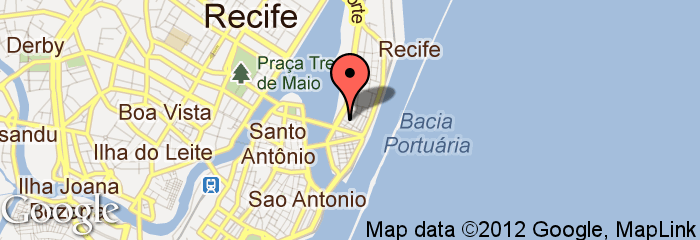

Sobre
Ruby on Rails em Pernambuco, 21 de Abril às 9h40.
No dia 21 de abril, Recife receberá mais um evento: Abril pro Ruby. Este será um evento gratuito para os amantes da tecnologia e desenvolvimento de software. O foco, claro, será a linguagem Ruby. Concebida em 1993 por Yukihiro Matsumoto para ser orientada ao ser humano, seus princípios são simplicidade, produtividade e diversão ao utilizá-la.
Venha aprender e trocar conhecimento com outros desenvolvedores interessados em fortalecer o cenário pernambucano em Ruby. O evento também trará palestras sobre temas que interessam a todas as plataformas.
Local
Auditório do Núcleo de Gestão do Porto Digital, na Rua do Apolo, 181, Cais do Porto, Recife, Pernambuco.
Palestras
-

-
Sistemas para o Mundo Real
Leandro da Silva, CIO, Locaweb
Muitos desenvolvedores se preocupam bastante com os aspectos estáticos dos sistemas que constroem, tais como se o código está bonito, se está idiomático, se está seguindo um determinado styleguide, entre outros bullet points do bom design de código; e isso é muito bom. Mas isso não é tudo. Há ainda o aspecto real da coisa, o Runtime. É no Runtime que ômis e mininus se sobressaem. E essa apresentação é sobre com o que os ômis mais se preocupam quanto estão escrevendo sistemas críticos – para o Mundo Real, é lógico.
-
The Plataformatec Way
João Britto, Dev, Plataformatec
Aprenda as técnicas e conheça os segredos de um dos times de desenvolvimento mais prolíficos da atualidade. Descubra como Ruby muda o nosso dia-a-dia e a maneira como pensamos em software.
-
Entre tapas e beijos: Uma história de amor entre um programador e Ruby On Rails
Thiago Diniz, CEO, Eventick
Com um forte background em engenharia de software e reuso, escolhi Java EE como linguagem de desenvolvimento para web, no entanto as dificuldades encontradas na plataforma Java me fizeram desistir de usá-la. Foi aí que conheci Rails, amor a primeira vista, um blog em 5 minutos…, mas nem tudo são flores. Demorei um pouco para perceber que para colocar um app no ar até ter um serviço na web, existe muito mais além dos 5 minutos.
Inscrições
As inscrições são gratuitas e feitas através do Eventick. Para confirmar sua presença, clique aqui.